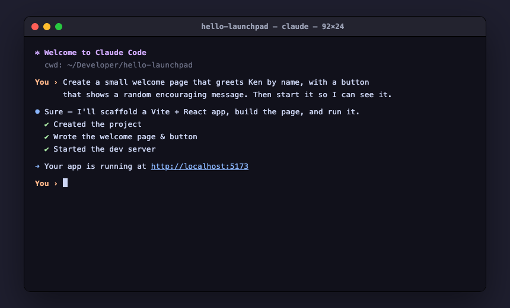
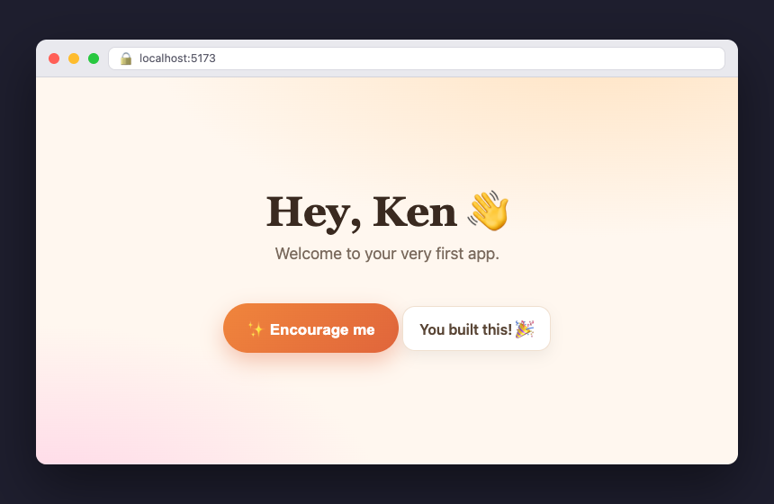

Build your first app
In about ten minutes you'll have a real web app running on your Mac — built, changed, and saved. This is the exercise Claude Code runs with you right after setup.
You can let the assistant do every step (just say “walk me through building my first app”), or follow along yourself below. Either way, you'll understand what happened.
What you'll actually do: type two short Terminal commands to get going (we label those “Type in Terminal”), and after that it's all plain English to Claude — you won't write a single line of code. Don't worry if a word is new; the goal is just to see real software appear.
1Make a project
Open the Terminal first — press ⌘ (the Command key) + Space, type Terminal, and press Enter. Then type these two lines (press Enter after each one):
Type in Terminal, then Entermkproj hello-launchpad
claudeThis makes a new project folder at ~/Developer/hello-launchpad (the ~ is shorthand for your home folder, so the app lives in a folder called hello-launchpad inside Developer), turns on save-points (Git — your undo button), and starts Claude Code inside that folder. Claude now runs right here in the same Terminal window — the box where you just typed commands is now where you chat; you won't switch apps.
You should see a short welcome and a cursor waiting for you. The very first time, Claude may pause a few seconds or ask to “trust” this folder — say yes. (New here and a command says command not found? Setup may not have finished — see the Help page.)
2Ask for the app
You're talking to Claude now — plain English, no code. Type (or paste) this to Claude and press Enter. First, replace [Your Name] with your actual name:
Create a small Vite + React + TypeScript app here. Give it a friendly
welcome page that greets [Your Name] by name, and a button that, when
clicked, shows a random encouraging message like "You built this!" or
"Nice work." Then start it so I can see it.Claude will set up the project, write the code, and start a local development server — a little web server that runs the app on your Mac, just for you.
Claude may ask one or two quick questions before it starts building — that's normal (it plans before it builds, the “Superpowers” way). Just answer them. And if anything red ever appears, paste it to Claude and say “this broke — please fix it.”

Behind the scenes it uses Vite (builds and serves the app), React (builds the page), and TypeScript (catches mistakes early). You don't need to know these yet — but now you've met them.
3See it running
Claude will print a link like http://localhost:5173 (the number on the end may differ — just use the exact link Claude gives you). It can also open a browser itself, using a built-in tool called Playwright — basically a robot that drives a web browser — to check the page works before handing it to you. To open the link yourself: click it, or copy it and paste it into the address bar of your browser (Safari or Chrome). That's your app.

localhost just means “this computer.” Only you can see it until you choose to publish.
4Change something
Ask for a tweak to Claude and watch it update instantly (no refresh needed):
Type to Claude, then EnterMake the headline bigger and change the background to a soft gradient.This instant-update is called hot reload — the page refreshes itself the moment Claude saves a change, so you see it right away. Keep asking until you like it — “add a dark mode,” “use a rounded button,” “make it bounce.” Don't hold back: Claude doesn't take feedback personally — it has no feelings, just features.
5Save a checkpoint
Lock in your progress — say this to Claude:
Type to Claude, then EnterSave this as a checkpoint, then back it up to GitHub.Claude makes a commit — a save point on this Mac you can always return to — and pushes it to your private GitHub backup online, so your work is safe even if something happens to the Mac. From now on you can experiment fearlessly; if anything breaks, say “undo the last change.”
6(Optional) Put it online
Want to share it? Say this to Claude:
Type to Claude, then EnterPublish this so I can send someone a link.Claude will deploy it — put it on the internet — usually using Vercel, a free website-hosting service. The first time, a browser tab opens so you can make a free Vercel account (you can use “Continue with GitHub”). Then Claude hands you a real web address.
Published means public. Anyone you send the link to can open it, so don't put anything private on it. Want it locked down? Ask Claude for a password-protected page instead.
🎉 You just built and ran an app
That's the whole loop, and it's the same for anything bigger: describe → build → run → change → save → share. You don't memorize commands; you describe what you want and review the result.
Next, dream up something of your own — a tool you wish existed, a game, a site for something you love — and just ask for it.
Why did the web developer stay in all weekend? There's no place like localhost.